Let's get started with sample dataset from open sources. We will use USA civil flights data since 1987 till 2015. It's hard to call this sample a Big Data (contains 166 millions rows, 63 Gb of uncompressed data) but this allows us to quickly get to work. Dataset is available for download here. Also you may download it from the original datasource as described here.
Firstly we will deploy ClickHouse to a single server. Below that we will also review the process of deployment to a cluster with support for sharding and replication.
On Ubuntu and Debian Linux ClickHouse can be installed from packages. For other Linux distributions you can compile ClickHouse from sources and then install.
clickhouse-client package contains clickhouse-client application — interactive ClickHouse client. clickhouse-server-base contains a clickhouse-server binary file. clickhouse-server-common — contains config files for the clickhouse-server.
Server config files are located in /etc/clickhouse-server/. Before getting to work please notice the path element in config. Path determines the location for data storage. It's not really handy to directly edit config.xml file considering package updates. Recommended way is to override the config elements in files of config.d directory. Also you may want to set up access rights at the start.
clickhouse-server won't be launched automatically after package installation. It won't be automatically restarted after updates either. Start the server with:
sudo service clickhouse-server startDefault location for server logs is /var/log/clickhouse-server/ Server is ready to handle client connections once "Ready for connections" message was logged.
Use clickhouse-client to connect to the server.
clickhouse-client clickhouse-client --host=... --port=... --user=... --password=...Enable multiline queries:
clickhouse-client -m clickhouse-client --multilineRun queries in batch-mode:
clickhouse-client --query='SELECT 1' echo 'SELECT 1' | clickhouse-clientInsert data from file of a specified format:
clickhouse-client --query='INSERT INTO table VALUES' < data.txt clickhouse-client --query='INSERT INTO table FORMAT TabSeparated' < data.tsv
Create table for sample dataset
$ clickhouse-client --multiline
ClickHouse client version 0.0.53720.
Connecting to localhost:9000.
Connected to ClickHouse server version 0.0.53720.
:) CREATE TABLE ontime
(
Year UInt16,
Quarter UInt8,
Month UInt8,
DayofMonth UInt8,
DayOfWeek UInt8,
FlightDate Date,
UniqueCarrier FixedString(7),
AirlineID Int32,
Carrier FixedString(2),
TailNum String,
FlightNum String,
OriginAirportID Int32,
OriginAirportSeqID Int32,
OriginCityMarketID Int32,
Origin FixedString(5),
OriginCityName String,
OriginState FixedString(2),
OriginStateFips String,
OriginStateName String,
OriginWac Int32,
DestAirportID Int32,
DestAirportSeqID Int32,
DestCityMarketID Int32,
Dest FixedString(5),
DestCityName String,
DestState FixedString(2),
DestStateFips String,
DestStateName String,
DestWac Int32,
CRSDepTime Int32,
DepTime Int32,
DepDelay Int32,
DepDelayMinutes Int32,
DepDel15 Int32,
DepartureDelayGroups String,
DepTimeBlk String,
TaxiOut Int32,
WheelsOff Int32,
WheelsOn Int32,
TaxiIn Int32,
CRSArrTime Int32,
ArrTime Int32,
ArrDelay Int32,
ArrDelayMinutes Int32,
ArrDel15 Int32,
ArrivalDelayGroups Int32,
ArrTimeBlk String,
Cancelled UInt8,
CancellationCode FixedString(1),
Diverted UInt8,
CRSElapsedTime Int32,
ActualElapsedTime Int32,
AirTime Int32,
Flights Int32,
Distance Int32,
DistanceGroup UInt8,
CarrierDelay Int32,
WeatherDelay Int32,
NASDelay Int32,
SecurityDelay Int32,
LateAircraftDelay Int32,
FirstDepTime String,
TotalAddGTime String,
LongestAddGTime String,
DivAirportLandings String,
DivReachedDest String,
DivActualElapsedTime String,
DivArrDelay String,
DivDistance String,
Div1Airport String,
Div1AirportID Int32,
Div1AirportSeqID Int32,
Div1WheelsOn String,
Div1TotalGTime String,
Div1LongestGTime String,
Div1WheelsOff String,
Div1TailNum String,
Div2Airport String,
Div2AirportID Int32,
Div2AirportSeqID Int32,
Div2WheelsOn String,
Div2TotalGTime String,
Div2LongestGTime String,
Div2WheelsOff String,
Div2TailNum String,
Div3Airport String,
Div3AirportID Int32,
Div3AirportSeqID Int32,
Div3WheelsOn String,
Div3TotalGTime String,
Div3LongestGTime String,
Div3WheelsOff String,
Div3TailNum String,
Div4Airport String,
Div4AirportID Int32,
Div4AirportSeqID Int32,
Div4WheelsOn String,
Div4TotalGTime String,
Div4LongestGTime String,
Div4WheelsOff String,
Div4TailNum String,
Div5Airport String,
Div5AirportID Int32,
Div5AirportSeqID Int32,
Div5WheelsOn String,
Div5TotalGTime String,
Div5LongestGTime String,
Div5WheelsOff String,
Div5TailNum String
)
ENGINE = MergeTree(FlightDate, (Year, FlightDate), 8192);
Now we have a table of MergeTree type. MergeTree table type is recommended for usage in production. Table of this kind has a primary key used for incremental sort of table data. This allows fast execution of queries in ranges of a primary key.
Note We store ad network banners impressions logs in ClickHouse. Each table entry looks like: [Advertiser ID, Impression ID, attribute1, attribute2, …]. Let assume that our aim is to provide a set of reports for each advertiser. Common and frequently demanded query would be to count impressions for a specific Advertiser ID. This means that table primary key should start with Advertiser ID. In this case ClickHouse needs to read smaller amount of data to perform the query for a given Advertiser ID.
Load data
xz -v -c -d < ontime.csv.xz | clickhouse-client --query="INSERT INTO ontime FORMAT CSV"
ClickHouse INSERT query allows to load data in any supported format. Data load requires just O(1) RAM consumption. INSERT query can receive any data volume as input. It's strongly recommended to insert data with not too small size blocks. Notice that insert of blocks with size up to max_insert_block_size (= 1 048 576 rows by default) is an atomic operation: data block will be inserted completely or not inserted at all. In case of disconnect during insert operation you may not know if the block was inserted successfully. To achieve exactly-once semantics ClickHouse supports idempotency for replicated tables. This means that you may retry insert of the same data block (possibly on a different replicas) but this block will be inserted just once. Anyway in this guide we will load data from our localhost so we may not take care about data blocks generation and exactly-once semantics.
INSERT query into tables of MergeTree type is non-blocking (so does a SELECT query). You can execute SELECT queries right after of during insert operation.
Our sample dataset is a bit not optimal. There are two reasons.
The first is that String data type is used in cases when Enum or numeric type would fit best.
⚖ When set of possible values is determined and known to be small. (E.g. OS name, browser vendors etc.) it's recommended to use Enums or numbers to improve performance. When set of possible values is not limited (search query, URL, etc.) just go ahead with String.
The second is that dataset contains redundant fields like Year, Quarter, Month, DayOfMonth, DayOfWeek. In fact a single FlightDate would be enough. Most likely they have been added to improve performance for other DBMS'es which DateTime handling functions may be not efficient.
✯ ClickHouse functions for operating with DateTime fields are well-optimized so such redundancy is not required. Anyway much columns is not a reason to worry — ClickHouse is a column-oriented DBMS. This allows you to have as much fields as you need. Hundreds of columns in a table is fine for ClickHouse.
Querying the sample dataset
Here are some examples of the queries from our test data.
-
the most popular destinations in 2015;
SELECT OriginCityName, DestCityName, count(*) AS flights, bar(flights, 0, 20000, 40) FROM ontime WHERE Year = 2015 GROUP BY OriginCityName, DestCityName ORDER BY flights DESC LIMIT 20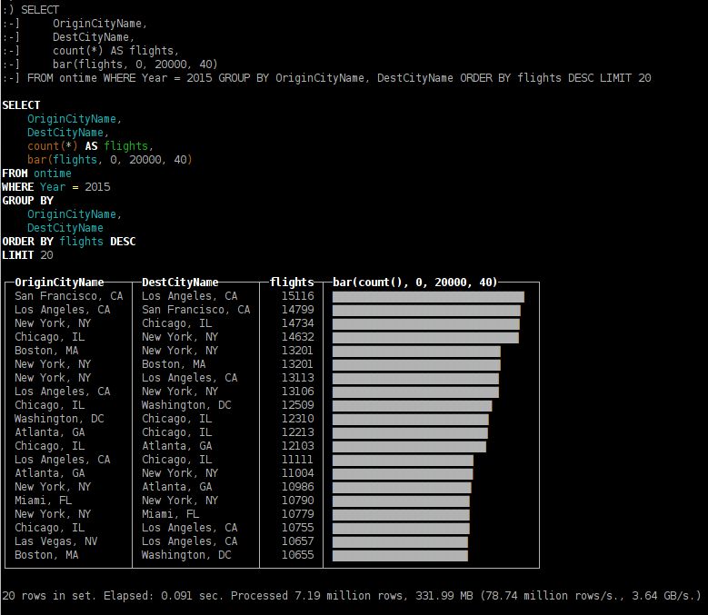SELECT OriginCityName < DestCityName ? OriginCityName : DestCityName AS a, OriginCityName < DestCityName ? DestCityName : OriginCityName AS b, count(*) AS flights, bar(flights, 0, 40000, 40) FROM ontime WHERE Year = 2015 GROUP BY a, b ORDER BY flights DESC LIMIT 20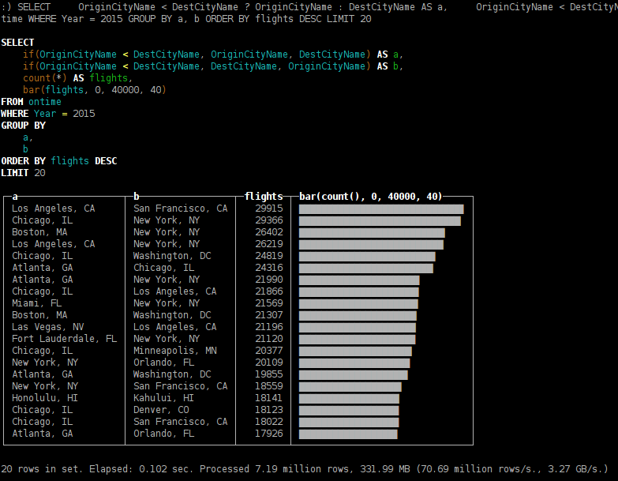 -
the most popular cities of departure;
SELECT OriginCityName, count(*) AS flights FROM ontime GROUP BY OriginCityName ORDER BY flights DESC LIMIT 20
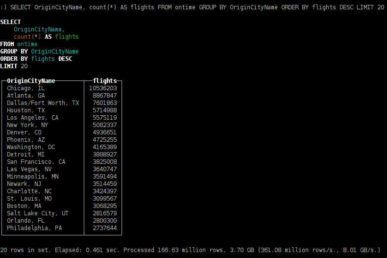 -
cities of departure which offer maximum variety of destinations;
SELECT OriginCityName, uniq(Dest) AS u FROM ontime GROUP BY OriginCityName ORDER BY u DESC LIMIT 20
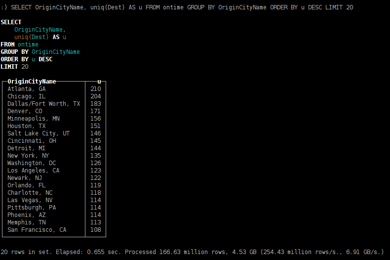 -
flight delay dependence on the day of week;
SELECT DayOfWeek, count() AS c, avg(DepDelay > 60) AS delays FROM ontime GROUP BY DayOfWeek ORDER BY DayOfWeek
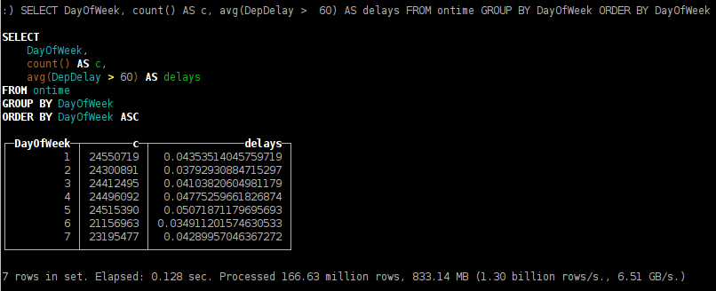 -
cities of departure with most frequent delays for 1 hour or longer;
SELECT OriginCityName, count() AS c, avg(DepDelay > 60) AS delays FROM ontime GROUP BY OriginCityName HAVING c > 100000 ORDER BY delays DESC LIMIT 20
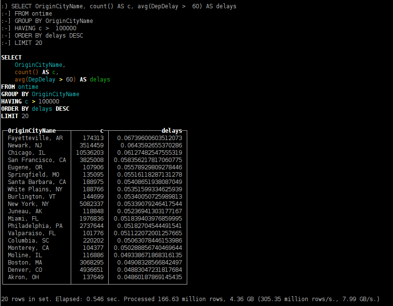 -
flights of maximum duration;
SELECT OriginCityName, DestCityName, count(*) AS flights, avg(AirTime) AS duration FROM ontime GROUP BY OriginCityName, DestCityName ORDER BY duration DESC LIMIT 20
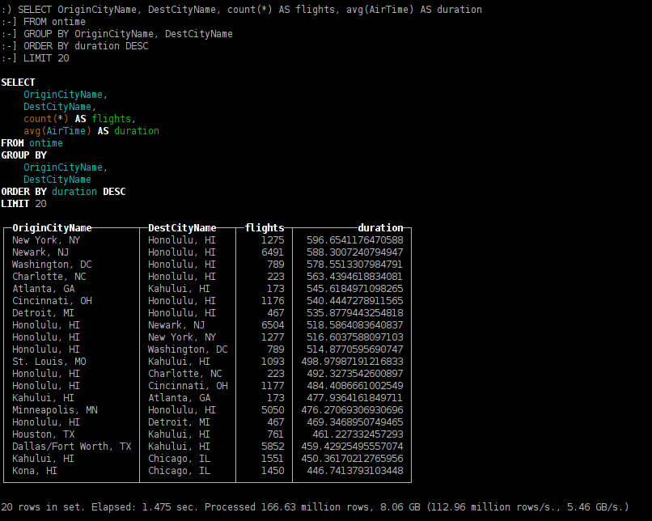 -
distribution of arrival time delays split by aircompanies;
SELECT Carrier, count() AS c, round(quantileTDigest(0.99)(DepDelay), 2) AS q FROM ontime GROUP BY Carrier ORDER BY q DESC
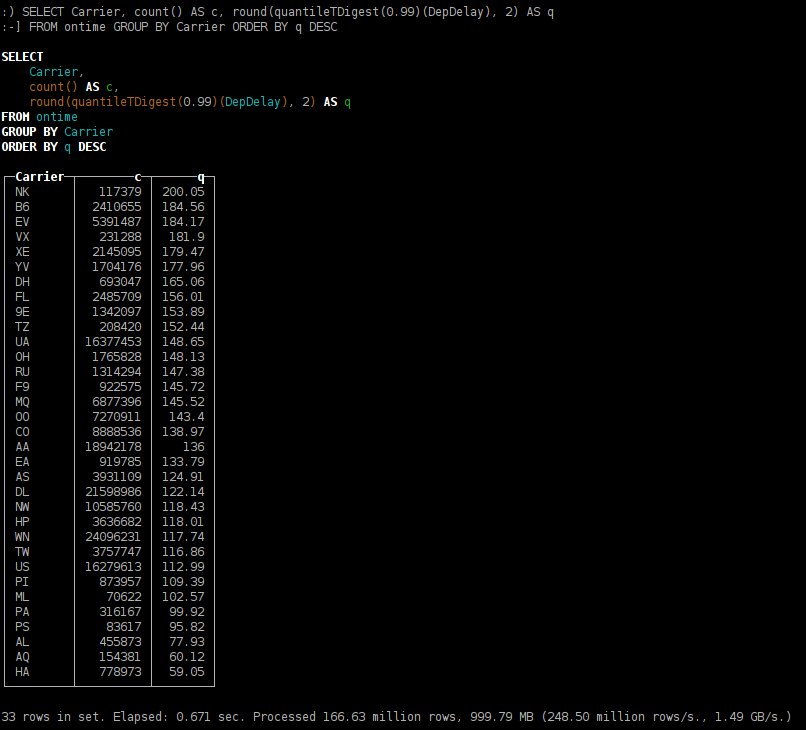 -
aircompanies who stopped flights operation;
SELECT Carrier, min(Year), max(Year), count() FROM ontime GROUP BY Carrier HAVING max(Year) < 2015 ORDER BY count() DESC
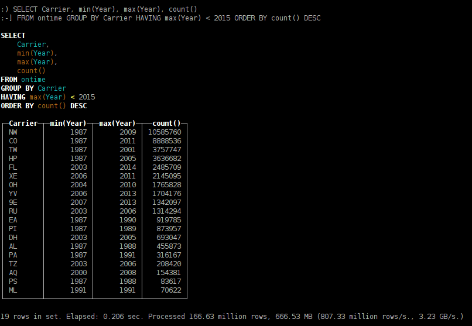 -
most trending destination cities in 2015;
SELECT DestCityName, sum(Year = 2014) AS c2014, sum(Year = 2015) AS c2015, c2015 / c2014 AS diff FROM ontime WHERE Year IN (2014, 2015) GROUP BY DestCityName HAVING c2014 > 10000 AND c2015 > 1000 AND diff > 1 ORDER BY diff DESC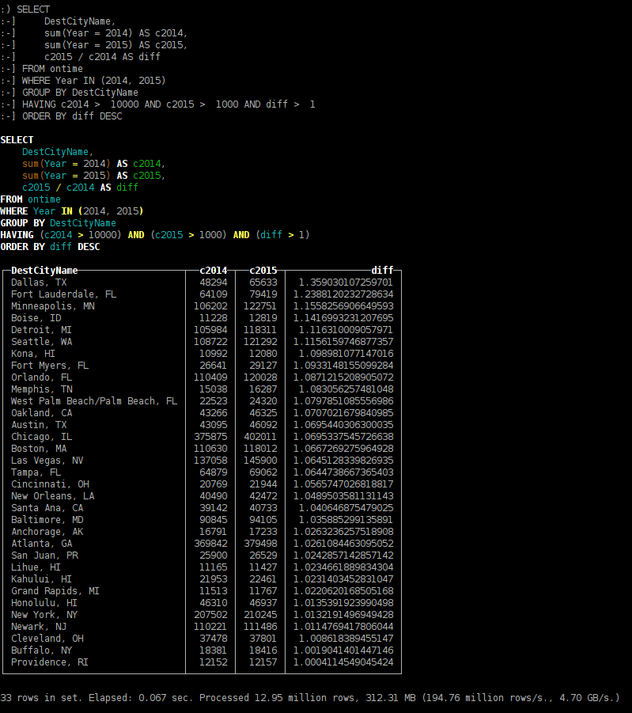 -
destination cities with maximum popularity-season dependency.
SELECT DestCityName, any(total), avg(abs(monthly * 12 - total) / total) AS avg_month_diff FROM ( SELECT DestCityName, count() AS total FROM ontime GROUP BY DestCityName HAVING total > 100000 ) ALL INNER JOIN ( SELECT DestCityName, Month, count() AS monthly FROM ontime GROUP BY DestCityName, Month HAVING monthly > 10000 ) USING DestCityName GROUP BY DestCityName ORDER BY avg_month_diff DESC LIMIT 20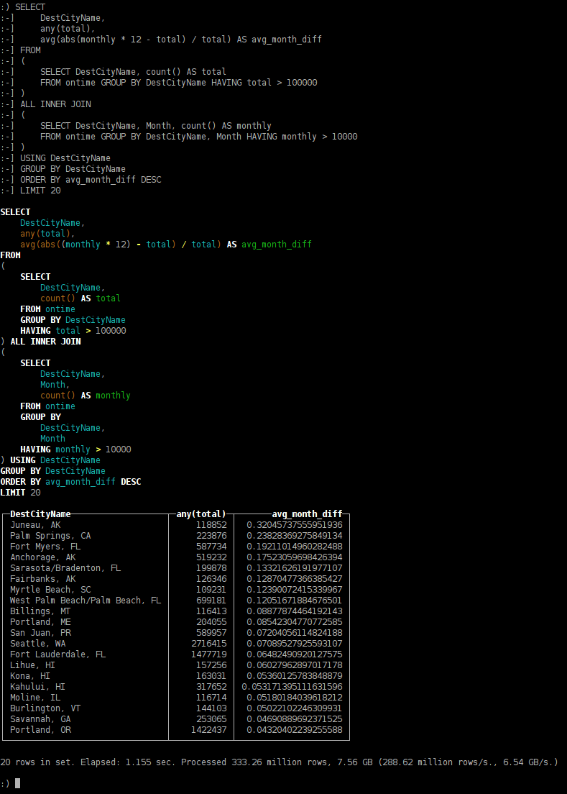
ClickHouse deployment to cluster
ClickHouse cluster is a homogenous cluster. Steps to set up:
- Install ClickHouse server on all machines of the cluster
- Set up cluster configs in configuration file
- Create local tables on each instance
- Create a Distributed table
Distributed-table is actually a kind of "view" to local tables of ClickHouse cluster. SELECT query from a distributed table will be executed using resources of all cluster's shards. You may specify configs for multiple clusters and create multiple Distributed-tables providing views to different clusters.
<remote_servers>
<perftest_3shards_1replicas>
<shard>
<replica>
<host>example-perftest01j.yandex.ru</host>
<port>9000</port>
</replica>
</shard>
<shard>
<replica>
<host>example-perftest02j.yandex.ru</host>
<port>9000</port>
</replica>
</shard>
<shard>
<replica>
<host>example-perftest03j.yandex.ru</host>
<port>9000</port>
</replica>
</shard>
</perftest_3shards_1replicas>
</remote_servers>
CREATE TABLE ontime_local (...) ENGINE = MergeTree(FlightDate, (Year, FlightDate), 8192);Creating a distributed table providing a view into local tables of the cluster:
CREATE TABLE ontime_all AS ontime_local
ENGINE = Distributed(perftest_3shards_1replicas, default, ontime_local, rand());
You can create a Distributed table on all machines in the cluster. This would allow to run distributed queries on any machine of the cluster. Besides distributed table you can also use *remote* table function.
Let's run INSERT SELECT into Distributed table to spread the table to multiple servers.
INSERT INTO ontime_all SELECT * FROM ontime;
⚠ Worth to notice that the approach given above wouldn't fit for sharding of large tables.
As you could expect heavy queries are executed N times faster being launched on 3 servers instead of one.

You may have noticed that quantiles calculation are slightly different. This happens due to t-digest algorithm implementation which is non-deterministic — it depends on the order of data processing.
In this case we have used a cluster with 3 shards each contains a single replica.
To provide for resilience in production environment we recommend that each shard should contain 2-3 replicas distributed between multiple data-centers. Note that ClickHouse supports unlimited number of replicas.
<remote_servers>
...
<perftest_1shards_3replicas>
<shard>
<replica>
<host>example-perftest01j.yandex.ru</host>
<port>9000</port>
</replica>
<replica>
<host>example-perftest02j.yandex.ru</host>
<port>9000</port>
</replica>
<replica>
<host>example-perftest03j.yandex.ru</host>
<port>9000</port>
</replica>
</shard>
</perftest_1shards_3replicas>
</remote_servers>
To enable replication ZooKeeper is required. ClickHouse will take care of data consistency on all replicas and run restore procedure after failure automatically. It's recommended to deploy ZooKeeper cluster to separate servers.
ZooKeeper is not a requirement — in some simple cases you can duplicate the data by writing it into all the replicas from your application code. This approach is not recommended — in this case ClickHouse is not able to guarantee data consistency on all replicas. This remains the responsibility of your application.
<zookeeper-servers>
<node>
<host>zoo01.yandex.ru</host>
<port>2181</port>
</node>
<node>
<host>zoo02.yandex.ru</host>
<port>2181</port>
</node>
<node>
<host>zoo03.yandex.ru</host>
<port>2181</port>
</node>
</zookeeper-servers>
Also we need to set macros for identifying shard and replica — it will be used on table creation
<macros>
<shard>01</shard>
<replica>01</replica>
</macros>
If there are no replicas at the moment on replicated table creation — a new first replica will be instantiated. If there are already live replicas — new replica will clone the data from existing ones. You have an option to create all replicated tables first and that insert data to it. Another option is to create some replicas and add the others after or during data insertion.
CREATE TABLE ontime_replica (...)
ENGINE = ReplicatedMergeTree(
'/clickhouse_perftest/tables/{shard}/ontime',
'{replica}',
FlightDate,
(Year, FlightDate),
8192);
Here we use ReplicatedMergeTree table type. In parameters we specify ZooKeeper path containing shard and replica identifiers.
INSERT INTO ontime_replica SELECT * FROM ontime;
Replication operates in multi-master mode. Data can be loaded into any replica — it will be synced with other instances automatically. Replication is asynchronous so at a given moment of time not all replicas may contain recently inserted data. To allow data insertion at least one replica should be up. Others will sync up data and repair consistency once they will become active again. Please notice that such scheme allows for the possibility of just appended data loss.
ClickHouse source code is published under Apache 2.0 License. Software is distributed on an "AS IS" BASIS, WITHOUT WARRANTIES OR CONDITIONS OF ANY KIND, either express or implied.